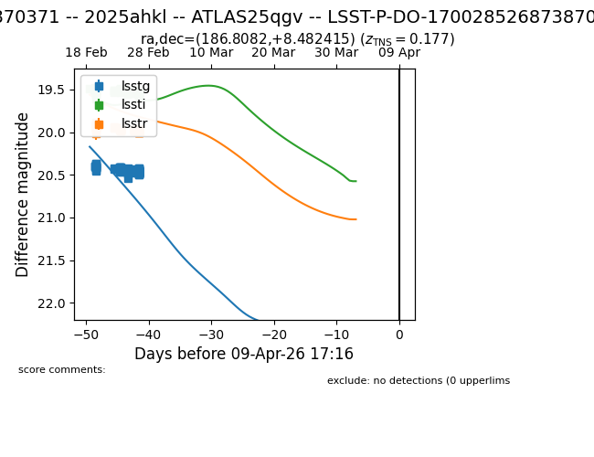
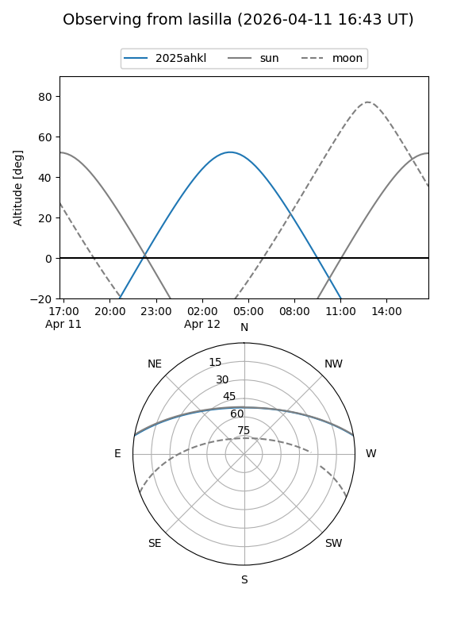
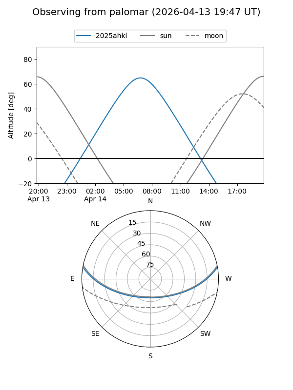
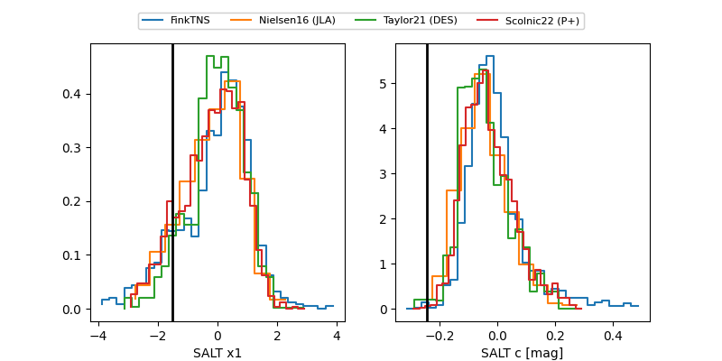

2025ahkl
Target 2025ahkl at 2026-04-09 17:22
Aliases and brokers:
TNS: link
YSE: link
alt names
LSST-P-DO-170028526873870371 (lsst)
170028526873870371 (fink_lsst)
2025ahkl (tns,yse)
ATLAS25qgv (atlas)
PS25mpc (panstarrs)
Coordinates:
equatorial (ra, dec) = 186.8082,+8.48242
equatorial (HMS+DMS) = 12:27:13.98,+08:28:56.70
galactic (l, b) = (284.7363,+70.49428)
Flags:
Photometry:
last lsstg=20.47, lssti=19.55, lsstr=19.99
127 lsstg, 125 lssti, 90 lsstr detections
Lightcurve

Visibility


Additional plots
